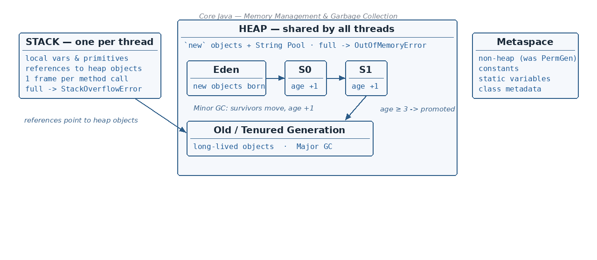

Example — how stack and heap work together
☕ 10 min read · 🎬 Video walkthrough · 📊 UML diagram · 💻 Runnable code
⚡ In a nutshell — The two kinds of memory the JVM uses: Stack and Heap · What is stored in each one, and what happens when they get full · Strong, Weak and Soft references · How the Heap is divided into generations (Eden, Survivor S0/S1, Old, Metaspace)
When a Java program runs, the JVM (Java Virtual Machine) asks the computer's RAM for memory. The JVM splits this memory into two main areas:

Both are created by the JVM and stored in RAM.
Simple analogy: think of the stack as your small work desk — you keep only the papers you are working on right now, and you clear them as soon as you finish. The heap is the big storeroom — everything big and long-living goes there, and a cleaner (the Garbage Collector) throws away things nobody uses anymore.
The stack stores the small, short-lived things:
int, char, boolean, double, …) declared inside methods live directly on the stack.More important rules about the stack:
java.lang.StackOverflowError.public class MemoryDemo {
public static void main(String[] args) {
int a = 10; // primitive -> stored on STACK
String s = new String("hello"); // reference 's' on STACK,
// the String object on HEAP
printMessage(s); // new stack frame is created
} // frames removed when methods end
static void printMessage(String msg) { // 'msg' is a reference on STACK
System.out.println(msg);
}
}
Output:
hello
If a method keeps calling itself and never stops, frames keep piling up until the desk (stack) overflows:
public class StackOverflowDemo {
static void callMyself() {
callMyself(); // no stopping condition -> infinite recursion
}
public static void main(String[] args) {
callMyself();
}
}
Output:
Exception in thread "main" java.lang.StackOverflowError
Remember: Stack = small, fast, per-thread, cleans itself automatically. Full stack →
StackOverflowError.
The stack holds references to heap objects. Java has different "strengths" of references, which tell the Garbage Collector how important the object is:
Person p = new Person();. "I am using this — do NOT touch it." — Never, as long as the strong reference existsimport java.lang.ref.SoftReference;
import java.lang.ref.WeakReference;
public class ReferenceDemo {
public static void main(String[] args) {
// 1. Strong reference — GC will never collect this while 'strong' exists
String strong = new String("I am strong");
// 2. Weak reference — collected as soon as GC runs
WeakReference<String> weak =
new WeakReference<>(new String("I am weak"));
// 3. Soft reference — collected only when memory is low
SoftReference<String> soft =
new SoftReference<>(new String("I am soft"));
System.out.println(weak.get()); // object still there (GC not run yet)
System.gc(); // politely ask GC to run
System.out.println(weak.get()); // very likely null now
System.out.println(soft.get()); // still alive (memory is not low)
}
}
Output (typical):
I am weak
null
I am soft
The heap stores the big, long-lived things:
new live in the heap."hello" are kept and reused.java.lang.OutOfMemoryError.Remember: Stack full →
StackOverflowError. Heap full →OutOfMemoryError. This is a very common interview question!
java.lang.StackOverflowError — java.lang.OutOfMemoryErrorThe heap is further divided into areas called generations:
Beside the heap there is a non-heap area:
+---------------------------------------------+ +---------------+
| HEAP MEMORY | | METASPACE |
| +--------------------+ +----------------+ | | (Non-Heap; |
| | YOUNG GENERATION | | OLD / TENURED | | | was PermGen |
| | +------+---+---+ | | GENERATION | | | before Java8)|
| | | Eden | S0| S1| | | | | | - constants |
| | +------+---+---+ | | (Major GC) | | | - class vars |
| | (Minor GC) | | | | | - class |
| +--------------------+ +----------------+ | | metadata |
+---------------------------------------------+ +---------------+
In plain words: the heap is one long box split into Young Generation and Old Generation. The Young Generation itself is split into Eden and two Survivor spaces (S0 and S1). Metaspace sits outside the heap.
Think of objects as students and GC runs as exams:
The notes give a concrete example with 8 objects (01 … 08). The Minor GC in the Young Generation runs very frequently (in the notes' example: every ~6 seconds), while the Major GC in the Old Generation runs very rarely, periodically.
Objects created: 01, 02, 03, 04, 05, 06, 07, 08
STEP 1: 01..05 are in Eden. GC runs (Mark & Sweep).
02 and 05 have NO reference -> deleted.
01, 03, 04 survive -> moved to S0 with age 1.
STEP 2: New objects 06, 07, 08 fill Eden. GC runs again.
06, 07 have NO reference, and now 04 has NO reference -> deleted.
Survivors move to the *other* survivor space (S1),
and each survivor's age +1: 01(age 2), 08(age 1), ...
STEP 3: GC runs again. 08 and 03 have NO reference -> deleted.
01 survives again -> age 3.
STEP 4: Age 3 = THRESHOLD -> PROMOTION!
01 is moved from the Young Generation to the OLD GENERATION.
+--------+------+------+ +------------------+
| Eden | S0 | S1 | | Old Generation |
| | | | --> | 01 |
+--------+------+------+ +------------------+
Minor GC Major GC
Key points to remember from this walk-through:
import java.util.ArrayList;
import java.util.List;
public class OutOfMemoryDemo {
public static void main(String[] args) {
List<int[]> list = new ArrayList<>();
while (true) {
list.add(new int[1_000_000]); // keep filling the heap forever
}
}
}
Output (after some time):
Exception in thread "main" java.lang.OutOfMemoryError: Java heap space
This is the core algorithm the Garbage Collector uses. It has three simple steps:
Before: [A][B][C][D][E][F] (B, D, E have no references)
1) MARK: [A][X][C][X][X][F] mark which to be removed
2) SWEEP: [A][ ][C][ ][ ][F] remove them -> gaps appear
3) COMPACT:[A][C][F][ ][ ][ ] shift survivors together
-> free space is now continuous
Analogy: imagine a bookshelf. First you put stickers on the books nobody reads (mark), then you throw those books away (sweep), and finally you slide the remaining books to one side so all the empty space is together (compact).
There are four classic types of Garbage Collectors:
An important term first: "Stop the World" pause — when the GC starts, all application threads are paused so the GC can clean safely. A long pause makes your app freeze, so newer GCs try to shorten or remove it.
Remember: Serial = 1 thread + full pause. Parallel = many threads + pause (default). CMS = concurrent but no compaction. G1 = concurrent + compaction.
StackOverflowError.OutOfMemoryError.👏 Found this useful? Give it a few claps so more developers discover it, and follow for the whole series — every article ships with a UML diagram, runnable code, a narrated video, and a companion PDF. Happy building! 🚀